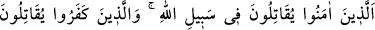
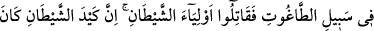
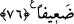

mü’min bir vâli ver. “bize katından” düşmanlarımıza karşı yardım edecek “bir
yardımcı yolla!” Allah onların dualarını kabul eylemiş ve bâzılarını Mekke
fethedilmeden önce Medîne’ye ulaşmaya muvaffak etmiştir. Fethe kadar orada kalanlara
da hayırlı bir velî ve güçlü bir yardımcı nasip etmiştir. Mekke’yi Hz. Peygamber
aracılığı ile fethetmiş, böylece onların işlerini üstlenmiş ve onlara en güzel şekilde
yardım etmiştir. Sonra Hz. Peygamber (s.a.v) Attâb b. Esîd’i Mekke’ye vâli tâyin etti.
Attâb da zayıflara haklarını kat kat vermeye, güçlüleri de haklı olmaları durumunda
daha da güçlendirmeye başladı. Oradaki müslümanlar ondan tam istedikleri gibi bir
valilik ve yardımcılık görerek Mekke’lilerin en güçlüsü oldular.
“Zavallı erkekler, kadınlar ve çocuklar uğrunda savaşmıyorsunuz!” “Bunlar,
Mekke’de müslüman olan ve müşriklerin hicret etmelerini engellemesi yüzünden hor,
hakir ve zayıf olarak onların arasında kalan, onlardan şiddetli eziyetler gören
kimselerdir. Bu kimseler uğrunda savaşmak, Allah yolunda savaşmaya atfedilmiştir.
‘Allah’ın yolu’ (sebîlullah) kavramı, bütün hayırlar için umûmî olduğu halde zayıf
müslümanlar özel olarak zikredilmiştir, çünkü zayıf müslümanların kâfirlerin elinden
kurtarılması hayırların en büyüğü ve özelidir.
Çocukların zayıflarla berâber zikredilmesi, müşriklerin zulümlerinin çok fazla
olduğunu, hattâ babalarını zorlamak, onların yerine çocuklardan öfkelerini çıkarmak için
mükellef olmayan küçük çocuklara ulaşacak kadar aşırıya gittiklerini tescil etmek
maksadıyladır.
Çünkü yine bu zayıf müslümanlar, küçüklerinin duâsıyla Allah’ın rahmetine nâil
olabilmek için duâlarında günahsız çocuklarını da berâberlerinde bulundururlardı.
Nitekim Yûnus (a.s)’ın kavmi de böyle yapardı. Yine yağmur duâsına (istiskâ)
çocukların da götürülmesi sünnette vârid olmuştur.
Bu âyet, müslüman esirlerin kâfirlerin elinden savaş ve fidye ödeme gibi hangi yolla
imkan bulunursa kurtarılmalarının vâcib olduğunu göstermektedir.
76- Îmân edenler Allah yolunda savaşırlar, inkâr edenler ise tâğut (bâtıl dâvâlar
ve şeytan) yolunda savaşırlar. O halde şeytanın dostlarıyla savaşın; şüphe yok ki
şeytanın hilesi zayıftır.
Îman edenler “İnananlar Allah yolunda savaşırlar.” Yâni mü’minler, sâdece
kendilerini Allah’a ulaştıran Allah’ın dini uğrunda, O’nun kelimesini yüceltmek için
savaşırlar. Bu bakımdan, onların veli ve yardımcısı hiç şüphesiz Allah’tır. “İnkâr